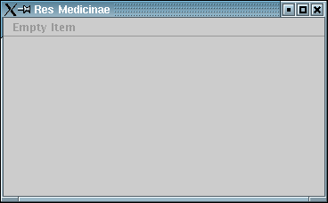

6 Concerns
A concern is something like an aspect, some behaviour the component has, some role/task that the component is capable to fulfill. For each of the lifecycle methods listed in the previous section, there is a concern with a similar name, for example:
ExecutableContextualizableComposeableConfigurableInitializableLoadableShowableStartableSuspendable
In programming, concerns are represented by interface classes.
Such an interface definition contains only public methods that belong to the concern.
The Showable interface, for example, has the following methods:
public interface Showable {
/**
* Shows the view.
*
* @param v the view
*/
public void show(View v);
/**
* Hides the view.
*
* @param v the view
*/
public void hide(View v);
}
You are free to create your own concerns for special roles that your component offers.
As an example, you might want to code something like an AddressChecker.
What is the actual task or role of that component? It is to check an address.
Now, you could create an interface class Checker that contained only one single public method declaration check(Address a).
Our AddressChecker class would inherit from that interface and by this indicate to potential calling classes, that it offers a checking functionality.
Why do we need those concerns/interfaces? There are two reasons.
Firstly, the component only needs to have public lifecycle and role methods.
Everything else can be hidden to the outside, at package level or being protected or private.
Secondly, the interfaces are necessary to support handling through containers.
A container doesn't know about the interna of a component, it has to rely on the lifecycle specification to be neutral and support all kinds of components.
Therefore, this specification is sometimes called a contract between the container and its components.
So, the container HelloWorldLauncher.java just calls the single lifecycle methods in the specified order.
It checks the component for each concern offered and then calls a method or not.
To see if a component has the concern Showable, for example, the container would use this code:
if (c instanceof Showable) {
c.show(View v);
}
What remains to do for us now, is to let our HelloWorldControllerImpl.java component inherit from the needed interfaces (concerns), so that the container (launcher) will call the right methods:
public class HelloWorldControllerImpl extends ApplicationControllerImpl implements Contextualizable, Configurable, Initializable, Showable {
}
Don't forget to import the right packages!
All component functionality is to be found in org.resmedicinae.resmedlib.component.*

The result has remained the same: We see an empty default view of the ResMedLib Framework.
But the way to come there is different now.
The lifecycle methods in container HelloWorldLauncher are only called if the corresponding component
HelloWorldControllerImpl has implemented the necessary interfaces.
We have gained a lot of knowledge and know now what concerns are and how they can be worked with.
| Next | Contents | Next |
Copyright (c) 1999-2002. The Res Medicinae Webmasters. All rights reserved. GNU FDL license. Last Update: 07.05.2002